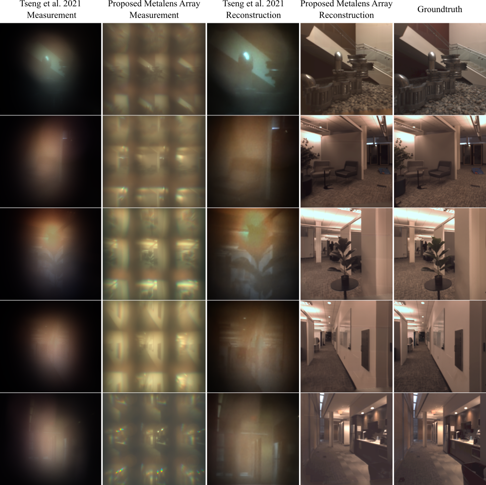
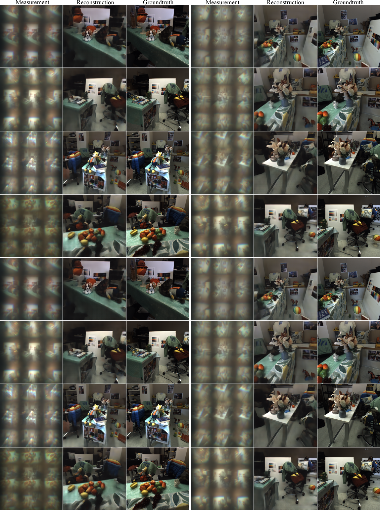

Thin On-Sensor Nanophotonic Array Cameras
Comparison with Tseng et al. 2021
We provide a variety of indoor and outdoor scenes in-the-wild and compare the performance of the proposed nanophotonic array camera with Tseng et al. 2021.

Additional Comparisons with Compound Lens Camera
We provide a variety of indoor and outdoor scenes captured in-the-wild and compare the performance of the proposed nanophotonic array camera with compound lens groundtruth camera.
